Norra Rörum
Lat: 56.02544230429888
Long: 13.500051498413086
[[Bild:Nrorum.jpg|350 px|thumb|Nick Baker,
Klarälven
5- (vägg 3 i Norra Rörum)
Foto:
Petter Åsander
]]
Allmänt
Norra Rörum är en mindre klippa i mitten av Skåne, en mil norr om Höör.
Klättringen är uppdelad på två väggpartier med lite olika karaktär. Den östra väggen är brant och ca 8 meter hög, här klättrar man i sprickor och på vägg med gott om små grepp och lister.
Sydväggen är mer polerad och lutar svagt inåt, här bjuds på några riktigt fina balansleder.
Mestadels är det tradklättring som gäller här, men ett antal bultar finns att klippa.
Toppankare byggs oftast enkelt med hjälp av träd om man har långa slingor eller statiskt rep.
Anmarschen är lätt och tillgängligheten väl framme vid klippan är bästa tänkbara.
Klippan ligger i skugga i princip hela dagen.
Hitta hit
Från Höör
kör man norrut på väg 23 mot Sösdala/Hässleholm. Ca 5 km efter Höör tar man av till vänster mot Norra Rörum. Väl inne i Norra Rörum viker man av åt höger mitt inne i byn (vid lanthandeln). Passera kyrkan och fortsätt ut ur byn, vägen går här mellan två stora åkrar. Precis när åkrarna tar slut och skogen börjar (bostadshus på höger sida) går det en liten grusväg in till vänster. Parkera i början på denna (visa hänsyn när du parkerar). Gå in på grusvägen västerut till fots ca 50 meter, där finns på vänster sida en stege över stängslet. Klättra över stegen och gå rakt över ängen tills du kommer upp på en grusväg på andra sidan (den syns redan innan du gått över ängen). Följ denna grusväg till höger ungefär 200m (du passerar en stor grop på vänster sida) tills vägen stöter på en annan nord-syd-gående grusväg. Ta vänster och följ sedan vägen tills du är framme vid klippan och vägens vändplats.
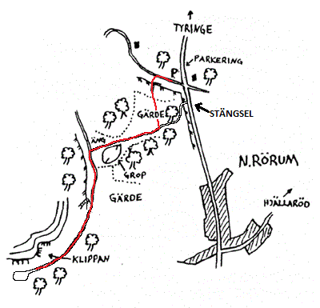
Väggöversikt
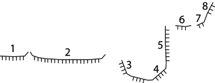
Södra väggen
Vägg 1
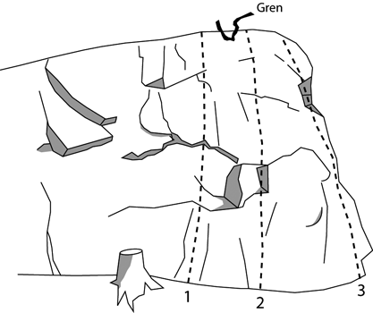
- 1
- Ledbesvär
- 7-
- Lätt upp till de två parallella skålarna. Svårsäkrat krux. Utsteg till vänster om grenen. Risk för fall i hylla!
- 3
- Kejsarens baksmälla
- 3
- Lätt led på den inte direkt jätteimponerande kanten.
Vägg 2
I princip alla leder till höger om "Botten upp" är mer eller mindre igenmossade och blockeras av ett stort träd som drar till sig mossa, fukt, löv och annat elände.
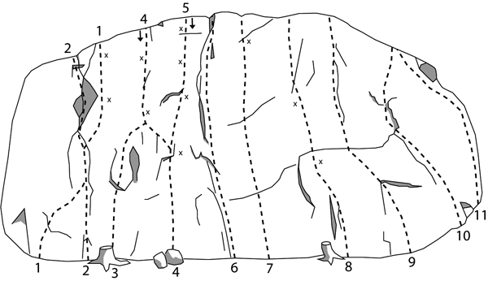
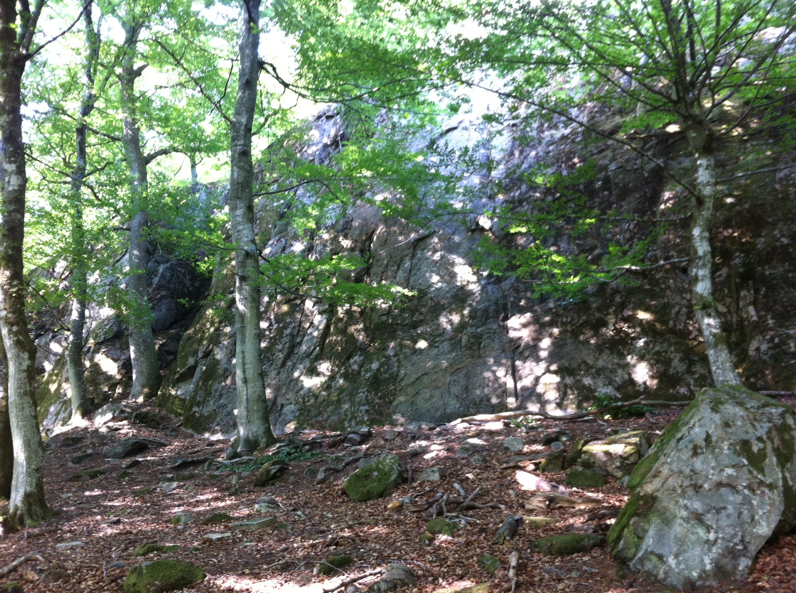
- 1
- Return of the man
- 6
- Insteg på hyllan, vik sedan av åt höger in till den lilla diedern.
- 2
- Drottningens framfall
- 4-
- Start i småsprickor, följ sedan uppbruten klippa rakt upp. Utsteget i sprickan till vänster är kruxet. Osäker gradering.
- 3
- Direktinsteget
- 7-
- Instegsvariant till "Myrslok".
- 4
- Myrslok
- 6-
- Gå rakt upp till första bulten. Efter första bb. gå lite snett vänster och sen rakt upp. En av de trevligare lederna i Norra Rörum. Firningsankare.
- 5
- Pissmyrornas hämnd
- 7-
- Samma insteg som "Myrslok", men där "Myrslok" viker av lite åt vänster fortsätter denna rakt upp och snart kommer ett svakrux. Ganska desperat krux. Firningsankare.
- 6
- Botten upp
- 5
- Följ den markanta sprickan hela vägen. Berget är poröst och kan gå sönder om man faller på kilar. svårsäkrad.
- 7
- Mosquito wins
- 6+
- Lätt i början. Lurig och svår att on-sighta!
- 8
- Fribergs & Larssons led
- 6-
- Rolig led mitt på väggen. Bultarna ska kompletteras med kil.
- 9
- Screaming Orgasm
- 5+
- Vägg- och sprickklättring. Sparsamt säkrad i början, men bättre mot slutet.
- 10
- Sumpråtta
- 6-
- Krux i starten, säkras med kilar.
- 11
- Skalman
- 5-
- Går utmed högra hörnet av väggen, sparsamt säkrad.
Vägg 3
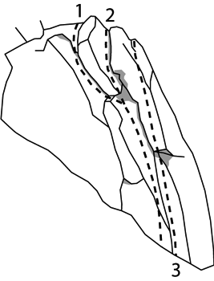
- 1
- Klarälven
- 5-
- Följer först "Baksprickan" upp halvvägs ungefär, sedan viker man av åt vänster förbi ett fint layback. Välsäkrad med kilar och friends. Osäker gradering.
- 2
- Baksprickan
- 4-
- Följer högra sprickan rakt upp. Välsäkrad med kilar och friends.
- 3
- En myra och en etta
- 6-
- Klättring upp i en tunn spricka ute på den lilla pelaren. (Osäkert exakt var leden går)
Östra väggen
Vägg 4
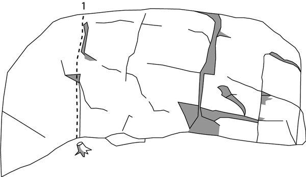
- 1
- Nere för vadsomhelst
- 4
- En tydlig lite sick-sackande spricka. Osäker gradering.
Vägg 5
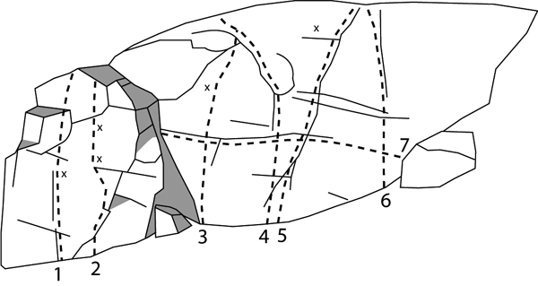
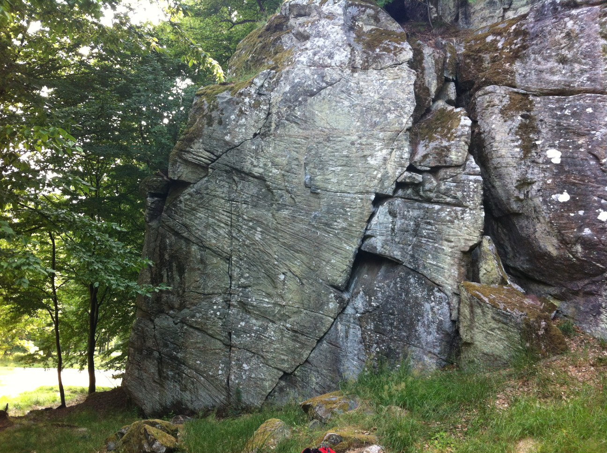
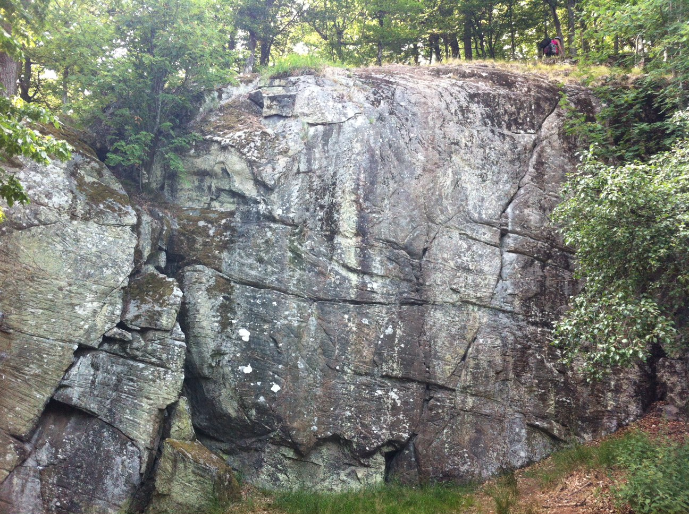
- 1
- Börnis bravader
- 7
- Väggklättring mitt på vänstra väggen. Säkras med en borrbult.
- 2
- Hot shot
- 8-
- Tuff led till höger om "Börnis bravader". Sliter hårt på fingrarna och säkras med två borrbultar.
Det finns ett direktinsteg som projekt och då håller man sig bara inne på vertikalväggen, alltså inte stora laybacksprickan längst till höger. Grad minst 7b+(8).
- 3
- Långa bollar på Bengt
- 7-
- Tung väggklätting med krux på insteget, andra krux vid borrbulten som är enda säkringen.
- 4
- Gröngöling
- 6-
- Följer sprickan rakt upp till flaket som viker av åt vänster. Sparsamt säkrad.
- 5
- Raka rör
- 6
- Följer sprickan åt höger. Krux vid utsteget.
- 6
- Bamsefar
- 6
- Rakt upp för väggens högra del. Samma utsteg som "Raka rör", som också är kruxet.
Boulderväggarna
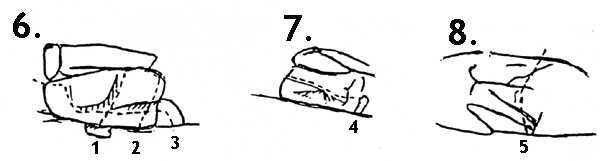
- 1
- Namnlös
- ?
- Rakt uppför klippan, till höger om det lilla hörnet.
- 2
- Namnlös
- ?
- Startar någon meter från hörnet, tuff catch innan toppen.
- 3
- Namnlös
- ?
- Travers på klippans nedre del.
- 4
- Travers pervers
- ?
- Tung travers fram och tillbaka strax ovanför marken. Lätt överhängande.
- 5
- Namnlös
- ?
- Rakt uppför det rena partiet till höger på klippan.
Kategori:Skåne
Copyright (C) Permission is granted to copy, distribute and/or modify this document under the terms of the GNU Free Documentation License, Version 1.3